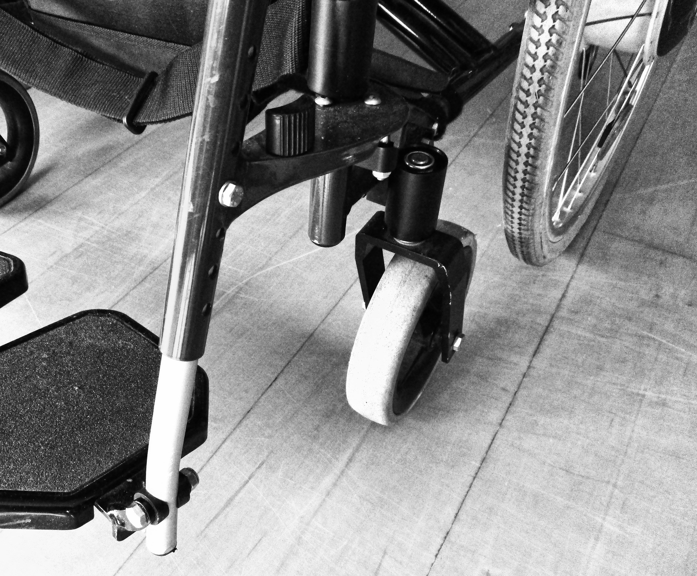

Lire la suite

Le reiki, une méthode de transmission d'énergie
Le reiki est un moyen de développement personnel et une approche thérapeutique manuelle pour une meilleure écoute du corps.
Anita Vivien , praticienne de reiki à La Pouëze
Passionnée par le reiki et l’art japonais d'harmonisation et de guérison, praticienne qualifiée je vous reçois à La Pouëze Erdre en Anjou dans le département du Maine-et-Loire...
Pourquoi ?
Le reiki, énergie universelle Cette technique japonaise de soin énergétique restaure et ré-harmonise l’équilibre physique, mental, émotionnel et spirituel...Déroulement d'une séance
Une séance de Reiki se déroule en trois temps et dure environ 1h30. Dans un premier temps, on prend une dizaine de minutes pour échanger sur les attentes et motivations du patient. Mon écoute est bienveillante, sans jugement. Le patient s'allonge par la suite sur la table de massage en restanthabillé (il ôtera simplement chaussures, bijoux, lunettes, ceintures). Confortablement allongé dans un endroit propice à la détente, le patient peut commencer à lâcher prise.
Une fois centrée, je commence la séance en apposant à distance mes mains de la tête jusqu'aux pieds. Chaque apposition des mains dure une à plusieurs minutes suivant les besoins énergétiques du corps. Tout au long de la séance, la personne s'apaise. Elle peut s'endormir, pleurer, sentir des picotements, du chaud, du froid ou rien. Mais l'énergie Reiki est toujours efficace et va directement où le corps en a le plus besoin. Suivant certaines pathologies, il faudra plusieurs séances pour que le travail se fasse en profondeur et durablement. Après la séance, nous reprenons un moment pour échanger sur les ressentis, si la personne le souhaite. Les séances de Reiki peuvent également se faire à distance (il est bien que la première se fasse au cabinet pour un premier échange). Nous déterminons par la suite le jour et l'heure de la séance. Le patient s'allongera chez lui ou dans un endroit qui favorisera la détente et je pratiquerai la séance au même moment afin d'être connectée. Que vous soyez à La Pouëze, Segré, Lion-d’Angers, Montreuil-Juigné, Beaucouzé ou encore Avrillé, je peux répondre à vos questions ceoncernat les séances de Reiki.
Bébés - enfants
More Info
Ce soin énergétique permet un travail sur les tracas du quotidien des plus jeunes comme les peurs ...
Adultes
More Info
Le Reiki est une pratique naturelle basée sur l'apport d'énergie.
Handicapés
More Info
Le Reiki est une méthode de soin énergétique répondant à un besoin de patients trop souvent négligé par la médecine moderne.
Animaux
More Info
Les animaux sont des êtres vivants, ils méritent notre attention et nos soins.
Séances d’EFT à La Pouëze
Acronyme d'"Emotional Freedom Techniques", l’EFT est une technique de libération émotionnelle qui consiste en des « tapotements » vers les méridiens énergétiques chinois du corps. En effet, cette méthode psycho-corporelle consiste à réduire les tensions vécues par l’individu et à neutraliser des réactions émotionnelles conservées dans la mémoire; pouvant être d’émotions négatives. Concrètement, il s'agit de tapoter avec l’index et le majeur ou de frotter avec fermeté mais doucement certains points spécifiques situés sur les méridiens perturbés afin de vous aider à réduire les différents symptômes de l’anxiété, des phobies et des problèmes physiques liés au stress. Destinée non seulement aux adultes, cette technique s’avère aussi efficace pour les enfants car elle les aide à gérer rapidement et durablement de nombreux petits maux au quotidien : peurs ou phobies( du noir, des araignées, de l'école...), colères, moqueries, anxiété de séparation, pipi au lit,.. "L'EFT n'a pas pour objectif de diagnostiquer ni de traiter des maladies physiques ou mentales quelles qu'elles soient. La consultation d'un médecin est nécessaire pour traiter de nombreuses pathologies", rappelle Jean-Marie Dabosville. En revanche, les séances d’EFT peuvent apporter souvent un soulagement là où d'autres thérapies ont échoué. Cette méthode est notamment utile pour la gestion de toutes les émotions négatives telles que : tristesse, peur, phobie, colère, dégoût, honte, anxiété, culpabilité, etc..., Elle permet également de résoudre certains problèmes physiques : douleurs, maigreur, obésité, etc, etc… ou à vous faire débarrasser de certaines manies : tabagisme, envies compulsives, bégaiement, etc.
Se détendre et se libérer du stress face à une situation donnée : C'est la principale action de l'EFT : cette méthode psycho-corporelle aide à réduire le stress ainsi que toutes les émotions qui lui sont associés. Se débarrasser de certaines phobies ou d’une peur persistante, intense et irrationnelle : aversion des araignées ou des serpents, claustrophobie, affolement à l’idée de prendre l’avion ou un ascenseur, peur panique de l’eau, phobie scolaire, agoraphobie, etc. Améliorer la confiance en soi : L’EFT permet d'affranchir un problème de mauvaise estime de soi. Cette méthode vous aide à reprogrammer votre subconscient et à améliorer votre estime personnelle afin de prendre confiance en vous. Se préparer à un examen (ou un entretien) : A l'approche du bac, du brevet, d'un gros contrôle, votre enfant panique ? L’EFT peut l'aider à se libérer du stress de l’événement. Elle est également utile pour ceux qui s’apprêtent à passer un entretien d'embauche.
Au début de la séance d’EFT, je m’occupe d’identifier l'origine de votre problème, en mettant le doigt sur la situation ou le problème qui provoque l'émotion à gérer. J’interviens ensuite pour évaluer le degré d'intensité de l'émotion en vous demandant de noter le degré de l'émotion ressentie. Je vous demanderai ensuite de répéter à plusieurs reprise une phrase-clé positive, tout en vous tapotant le point du karaté (en dessous du pouce). Cette phrase de démarrage peut être une phrase du type "je m'aime et je m'accepte complètement" ou encore "même si je suis stressé par ce devoir à l'école, je me fais confiance". Passons ensuite à la ronde EFT, cette phase a pour intérêt de stimuler les méridiens tout en restant concentré sur la situation problématique. Je tapote une dizaine de fois sur chacun, en partant du sommet du crâne, en allant jusque sous la poitrine. Une fois la ronde est terminée, je vous invite à respirer profondément et de repenser à la situation. J’analyse ensuite l'intensité de votre émotion et e vérifie si elle a diminué. A partir du résultat obtenu, je pourrai modifier la phrase de démarrage ou vous faire recommencer une nouvelle ronde, jusqu'à faire baisser l'émotion à un niveau acceptable. Que vous soyez à Segré, au Lion-d’Angers, à Montreuil-Juigné, à Beaucouzé ou encore à Avrillé, je vous reçois à mon domicile pour des séances d’EFT adaptées à votre situation. J'ai également la possibilité de me déplacer chez vous ou en institut.
Certification de Praticien Emotional Freedom Techniques Le centre de formation EFT représenté par Aurélie Pasilly atteste que j’ai suivi avec assiduité la formation de "Praticien en EFT" du 7 au 11 mai 2018 et le 20 Janvier 2019. Ayant démontré avec succès mes connaissances, ce centre de formation EFT m’a délivré la Certification de Praticien en EFT (niveau 1,2,3) à Rennes, le 21 Janvier 2019.